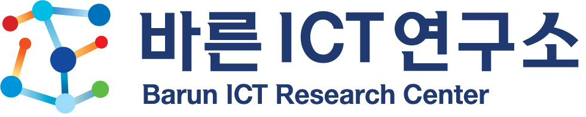
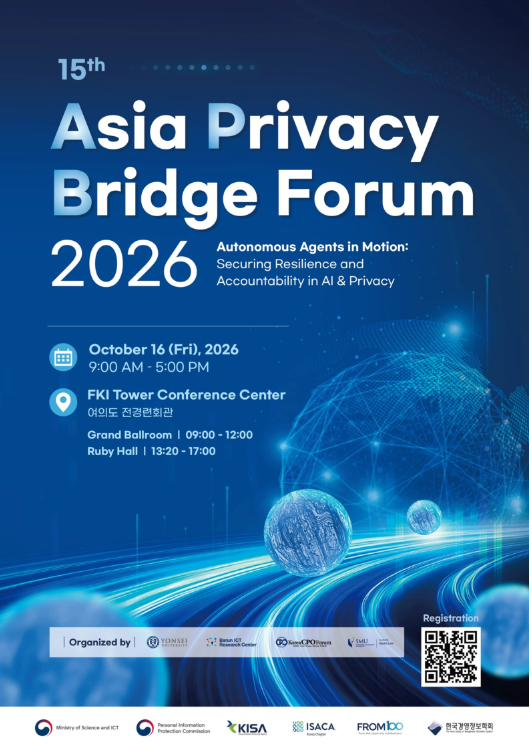

Fifteenth Edition · Since 2016
Asia Privacy Bridge Forum 2026
Autonomous Agents in Motion —
Securing Resilience and Accountability in AI & Privacy.

Asia Privacy Bridge Forum Vol. XV · MMXXVIThe fifteenth Asia Privacy Bridge Forum convenes around a shift that has moved from lab to production in a single year: autonomous agents that plan, act, and delegate on our behalf. We gather scholars, regulators, and industry to work through what resilience and accountability must mean when the actor is no longer strictly a person.
Delegation, the human loop, and the shape of meaningful consent when a system negotiates on your behalf.
Interoperability of privacy regimes across APEC, EU, and Korean frameworks in an agent-mediated economy.
Evidence, red-teaming, and the accountability record — how we prove what an autonomous system did, and why.
A plenary morning in the Grand Ballroom followed by parallel afternoon sessions in Ruby Hall. Full program is published on the Forum 2026 page.
Each edition has traced the field's inflection points — from data breaches through GDPR harmonization to the arrival of generative and agentic systems.
The official visual identity for the fifteenth Asia Privacy Bridge Forum. Feel free to circulate the poster within your institution, or embed it on your program calendar. High-resolution files are available on request from the secretariat.

Seats are limited and offered without charge. Sign up to be notified when the registration portal goes live, or contact the secretariat directly.
{kind=link}